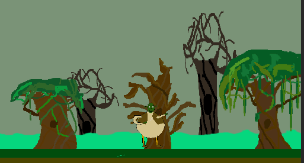
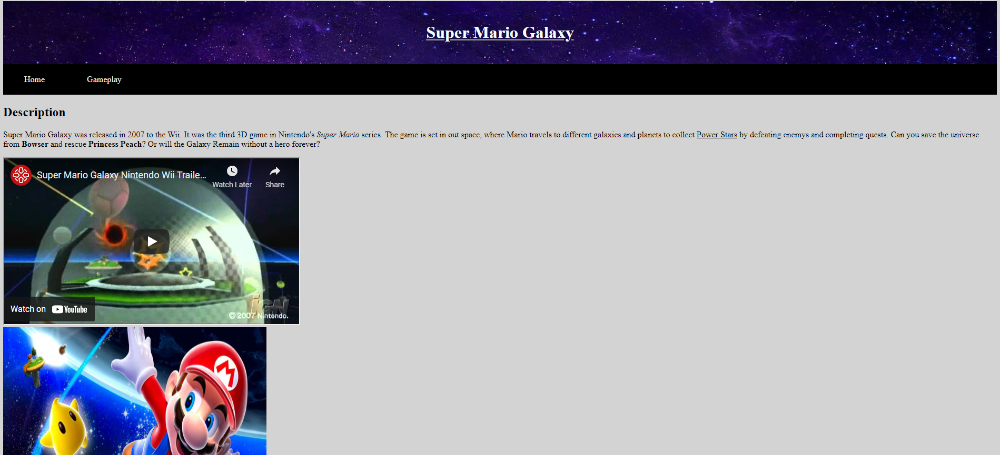
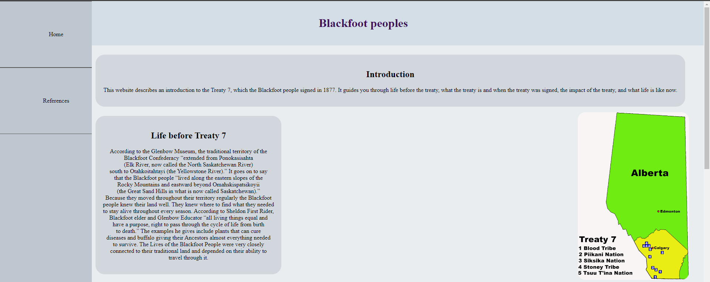
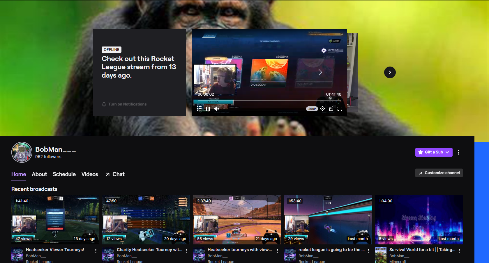

My Games

This was my first ever functioning game that I made in Unity.
This was my arcade game that me and a group made in 2021. This game was extremly important
for me as a game designer because it was the most difficult projects to make and I learned a lot about working as a group.
This was a solo project that I made over the course of 16 weeks.
This project teached me how tedious it is to playtest AIs.
I was making it off a tutorial but I was super happy off the progress I made for it.
This was a day cycle for a group project that I did this year. The project helped me learn more about keeping track
of time and being more realistic on what to get done.
My Websites

This was my first ever website that I have made. It was my first project using HTML and CSS. It helped me learn the correct way to use HTML and it taught a little bit about CSS.

This was a project that I did for my History class. It helped me devolop more skills in CSS, and helped me with organization of websites.

This is my part on the website Twitch.
My streaming has been a passion project for the last year and it has helped me devolop connections and skills with prensentating my content.